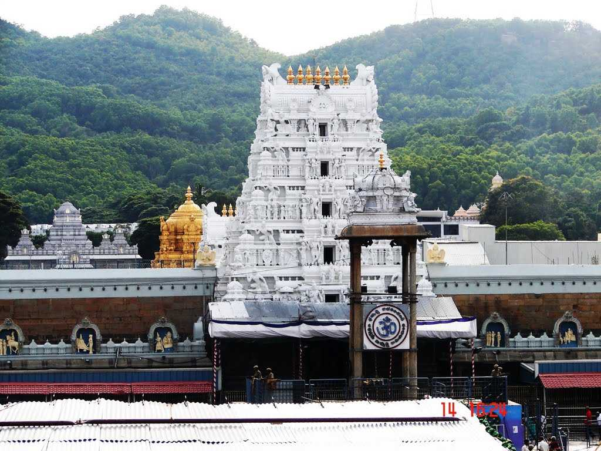

| Lord Venkateswara Temple at Tirumala (Tirupati) is one of the most famous temples in India. With more than 35 million pilgrims visiting the temple every year, it is one of the most visited holy places and also one of the richest temples in the world. Built on the Venkata Hill, which is a part of the famous Seshachalam Hills, Tirupati Temple is considered as one of the holiest shrines by the Hindus. According to a legend, Lord Vishnu assumed the form of Sri Venkateswara to save mankind from the adversities of Kali Yuga. The construction of the temple too has many legends associated with it. One such legend has it that Lord Vishnu appeared in King Thondaiman’s dream and asked him to construct the temple. The temple was later expanded by various kings and emperors who ruled over the place. Starting from 300 AD, the Tirupati Temple was built over a period of time. One of the earliest recorded evidences state the generosity of Pallava queen Samavai; she had donated precious jewels and 23 acres of land for celebrating the major festivals of the temple. |  |